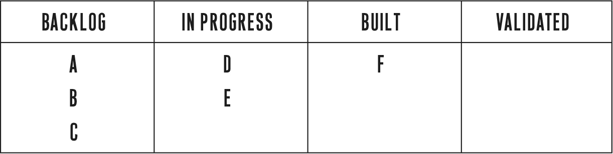
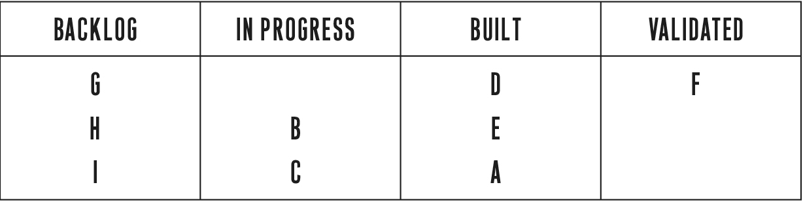

To get a better sense of the importance of good metrics, let’s look at a company called Grockit. Its founder, Farbood Nivi, spent a decade working as a teacher at two large for-profit education companies, Princeton Review and Kaplan, helping students prepare for standardized tests such as the GMAT, LSAT, and SAT. His engaging classroom style won accolades from his students and promotions from his superiors; he was honored with Princeton Review’s National Teacher of the Year award. But Farb was frustrated with the traditional teaching methods used by those companies. Teaching six to nine hours per day to thousands of students, he had many opportunities to experiment with new approaches.2
Over time, Farb concluded that the traditional lecture model of education, with its one-to-many instructional approach, was inadequate for his students. He set out to develop a superior approach, using a combination of teacher-led lectures, individual homework, and group study. In particular, Farb was fascinated by how effective the student-to-student peer-driven learning method was for his students. When students could help each other, they benefited in two ways. First, they could get customized instruction from a peer who was much less intimidating than a teacher. Second, they could reinforce their learning by teaching it to others. Over time, Farb’s classes became increasingly social—and successful.
As this unfolded, Farb felt more and more that his physical presence in the classroom was less important. He made an important connection: “I have this social learning model in my classroom. There’s all this social stuff going on on the web.” His idea was to bring social peer-to-peer learning to people who could not afford an expensive class from Kaplan or Princeton Review or an even more expensive private tutor. From this insight Grockit was born.
Farb explains, “Whether you’re studying for the SAT or you’re studying for algebra, you study in one of three ways. You spend some time with experts, you spend some time on your own, and you spend some time with your peers. Grockit offers these three same formats of studying. What we do is we apply technology and algorithms to optimize those three forms.”
Farb is the classic entrepreneurial visionary. He recounts his original insight this way: “Let’s forget educational design up until now, let’s forget what’s possible and just redesign learning with today’s students and today’s technology in mind. There were plenty of multi-billion-dollar organizations in the education space, and I don’t think they were innovating in the way that we needed them to and I didn’t think we needed them anymore. To me, it’s really all about the students and I didn’t feel like the students were being served as well as they could.”
Today Grockit offers many different educational products, but in the beginning Farb followed a lean approach. Grockit built a minimum viable product, which was simply Farb teaching test prep via the popular online web conferencing tool WebEx. He built no custom software, no new technology. He simply attempted to bring his new teaching approach to students via the Internet. News about a new kind of private tutoring spread quickly, and within a few months Farb was making a decent living teaching online, with monthly revenues of $10,000 to $15,000. But like many entrepreneurs with ambition, Farb didn’t build his MVP just to make a living. He had a vision of a more collaborative, more effective kind of teaching for students everywhere. With his initial traction, he was able to raise money from some of the most prestigious investors in Silicon Valley.
When I first met Farb, his company was already on the fast track to success. They had raised venture capital from well-regarded investors, had built an awesome team, and were fresh off an impressive debut at one of Silicon Valley’s famous startup competitions.
They were extremely process-oriented and disciplined. Their product development followed a rigorous version of the agile development methodology known as Extreme Programming (described below), thanks to their partnership with a San Francisco–based company called Pivotal Labs. Their early product was hailed by the press as a breakthrough.
There was only one problem: they were not seeing sufficient growth in the use of the product by customers. Grockit is an excellent case study because its problems were not a matter of failure of execution or discipline.
Following standard agile practice, Grockit’s work proceeded in a series of sprints, or one-month iteration cycles. For each sprint, Farb would prioritize the work to be done that month by writing a series of user stories, a technique taken from agile development. Instead of writing a specification for a new feature that described it in technical terms, Farb would write a story that described the feature from the point of view of the customer. That story helped keep the engineers focused on the customer’s perspective throughout the development process.
Each feature was expressed in plain language in terms everyone could understand whether they had a technical background or not. Again following standard agile practice, Farb was free to reprioritize these stories at any time. As he learned more about what customers wanted, he could move things around in the product backlog, the queue of stories yet to be built. The only limit on this ability to change directions was that he could not interrupt any task that was in progress. Fortunately, the stories were written in such a way that the batch size of work (which I’ll discuss in more detail in Chapter 9) was only a day or two.
This system is called agile development for a good reason: teams that employ it are able to change direction quickly, stay light on their feet, and be highly responsive to changes in the business requirements of the product owner (the manager of the process—in this case Farb—who is responsible for prioritizing the stories).
How did the team feel at the end of each sprint? They consistently delivered new product features. They would collect feedback from customers in the form of anecdotes and interviews that indicated that at least some customers liked the new features. There was always a certain amount of data that showed improvement: perhaps the total number of customers was increasing, the total number of questions answered by students was going up, or the number of returning customers was increasing.
However, I sensed that Farb and his team were left with lingering doubts about the company’s overall progress. Was the increase in their numbers actually caused by their development efforts? Or could it be due to other factors, such as mentions of Grockit in the press? When I met the team, I asked them this simple question: How do you know that the prioritization decisions that Farb is making actually make sense?
Their answer: “That’s not our department. Farb makes the decisions; we execute them.”
At that time Grockit was focused on just one customer segment: prospective business school students who were studying for the GMAT. The product allowed students to engage in online study sessions with fellow students who were studying for the same exam. The product was working: the students who completed their studying via Grockit achieved significantly higher scores than they had before. But the Grockit team was struggling with the age-old startup problems: How do we know which features to prioritize? How can we get more customers to sign up and pay? How can we get out the word about our product?
I put this question to Farb: “How confident are you that you are making the right decisions in terms of establishing priorities?” Like most startup founders, he was looking at the available data and making the best educated guesses he could. But this left a lot of room for ambiguity and doubt.
Farb believed in his vision thoroughly and completely, yet he was starting to question whether his company was on pace to realize that vision. The product improved every day, but Farb wanted to make sure those improvements mattered to customers. I believe he deserves a lot of credit for realizing this. Unlike many visionaries, who cling to their original vision no matter what, Farb was willing to put his vision to the test.
Farb worked hard to sustain his team’s belief that Grockit was destined for success. He was worried that morale would suffer if anyone thought that the person steering the ship was uncertain about which direction to go. Farb himself wasn’t sure if his team would embrace a true learning culture. After all, this was part of the grand bargain of agile development: engineers agree to adapt the product to the business’s constantly changing requirements but are not responsible for the quality of those business decisions.
Agile is an efficient system of development from the point of view of the developers. It allows them to stay focused on creating features and technical designs. An attempt to introduce the need to learn into that process could undermine productivity.
(Lean manufacturing faced similar problems when it was introduced in factories. Managers were used to focusing on the utilization rate of each machine. Factories were designed to keep machines running at full capacity as much of the time as possible. Viewed from the perspective of the machine, that is efficient, but from the point of view of the productivity of the entire factory, it is wildly inefficient at times. As they say in systems theory, that which optimizes one part of the system necessarily undermines the system as a whole.)
What Farb and his team didn’t realize was that Grockit’s progress was being measured by vanity metrics: the total number of customers and the total number of questions answered. That was what was causing his team to spin its wheels; those metrics gave the team the sensation of forward motion even though the company was making little progress. What’s interesting is how closely Farb’s method followed superficial aspects of the Lean Startup learning milestones: they shipped an early product and established some baseline metrics. They had relatively short iterations, each of which was judged by its ability to improve customer metrics.
However, because Grockit was using the wrong kinds of metrics, the startup was not genuinely improving. Farb was frustrated in his efforts to learn from customer feedback. In every cycle, the type of metrics his team was focused on would change: one month they would look at gross usage numbers, another month registration numbers, and so on. Those metrics would go up and down seemingly on their own. He couldn’t draw clear cause-and-effect inferences. Prioritizing work correctly in such an environment is extremely challenging.
Farb could have asked his data analyst to investigate a particular question. For example, when we shipped feature X, did it affect customer behavior? But that would have required tremendous time and effort. When, exactly, did feature X ship? Which customers were exposed to it? Was anything else launched around that same time? Were there seasonal factors that might be skewing the data? Finding these answers would have required parsing reams and reams of data. The answer often would come weeks after the question had been asked. In the meantime, the team would have moved on to new priorities and new questions that needed urgent attention.
Compared to a lot of startups, the Grockit team had a huge advantage: they were tremendously disciplined. A disciplined team may apply the wrong methodology but can shift gears quickly once it discovers its error. Most important, a disciplined team can experiment with its own working style and draw meaningful conclusions.
Grockit changed the metrics they used to evaluate success in two ways. Instead of looking at gross metrics, Grockit switched to cohort-based metrics, and instead of looking for cause-and-effect relationships after the fact, Grockit would launch each new feature as a true split-test experiment.
A split-test experiment is one in which different versions of a product are offered to customers at the same time. By observing the changes in behavior between the two groups, one can make inferences about the impact of the different variations. This technique was pioneered by direct mail advertisers. For example, consider a company that sends customers a catalog of products to buy, such as Lands’ End or Crate & Barrel. If you wanted to test a catalog design, you could send a new version of it to 50 percent of the customers and send the old standard catalog to the other 50 percent. To assure a scientific result, both catalogs would contain identical products; the only difference would be the changes to the design. To figure out if the new design was effective, all you would have to do was keep track of the sales figures for both groups of customers. (This technique is sometimes called A/B testing after the practice of assigning letter names to each variation.) Although split testing often is thought of as a marketing-specific (or even a direct marketing–specific) practice, Lean Startups incorporate it directly into product development.
These changes led to an immediate change in Farb’s understanding of the business. Split testing often uncovers surprising things. For example, many features that make the product better in the eyes of engineers and designers have no impact on customer behavior. This was the case at Grockit, as it has been in every company I have seen adopt this technique. Although working with split tests seems to be more difficult because it requires extra accounting and metrics to keep track of each variation, it almost always saves tremendous amounts of time in the long run by eliminating work that doesn’t matter to customers.
Split testing also helps teams refine their understanding of what customers want and don’t want. Grockit’s team constantly added new ways for their customers to interact with each other in the hope that those social communication tools would increase the product’s value. Inherent in those efforts was the belief that customers desired more communication during their studying. When split testing revealed that the extra features did not change customer behavior, it called that belief into question.
The questioning inspired the team to seek a deeper understanding of what customers really wanted. They brainstormed new ideas for product experiments that might have more impact. In fact, many of these ideas were not new. They had simply been overlooked because the company was focused on building social tools. As a result, Grockit tested an intensive solo-studying mode, complete with quests and gamelike levels, so that students could have the choice of studying by themselves or with others. Just as in Farb’s original classroom, this proved extremely effective. Without the discipline of split testing, the company might not have had this realization. In fact, over time, through dozens of tests, it became clear that the key to student engagement was to offer them a combination of social and solo features. Students preferred having a choice of how to study.
Following the lean manufacturing principle of kanban, or capacity constraint, Grockit changed the product prioritization process. Under the new system, user stories were not considered complete until they led to validated learning. Thus, stories could be cataloged as being in one of four states of development: in the product backlog, actively being built, done (feature complete from a technical point of view), or in the process of being validated. Validated was defined as “knowing whether the story was a good idea to have been done in the first place.” This validation usually would come in the form of a split test showing a change in customer behavior but also might include customer interviews or surveys.
The kanban rule permitted only so many stories in each of the four states. As stories flow from one state to the other, the buckets fill up. Once a bucket becomes full, it cannot accept more stories. Only when a story has been validated can it be removed from the kanban board. If the validation fails and it turns out the story is a bad idea, the relevant feature is removed from the product (see the chart on this page).
KANBAN DIAGRAM OF WORK AS IT PROGRESSES
FROM STAGE TO STAGE
(No bucket can contain more than three projects at a time.)

Work on A begins. D and E are in development. F awaits validation.

F is validated. D and E await validation. G, H, I are new tasks to be undertaken. B and C are being built. A completes development.
B and C have been built, but under kanban, cannot be moved to the next bucket for validation until A, D, E have been validated. Work cannot begin on H and I until space opens up in the buckets ahead.
I have implemented this system with several teams, and the initial result is always frustrating: each bucket fills up, starting with the “validated” bucket and moving on to the “done” bucket, until it’s not possible to start any more work. Teams that are used to measuring their productivity narrowly, by the number of stories they are delivering, feel stuck. The only way to start work on new features is to investigate some of the stories that are done but haven’t been validated. That often requires nonengineering efforts: talking to customers, looking at split-test data, and the like.
Pretty soon everyone gets the hang of it. This progress occurs in fits and starts at first. Engineering may finish a big batch of work, followed by extensive testing and validation. As engineers look for ways to increase their productivity, they start to realize that if they include the validation exercise from the beginning, the whole team can be more productive.
For example, why build a new feature that is not part of a split-test experiment? It may save you time in the short run, but it will take more time later to test, during the validation phase. The same logic applies to a story that an engineer doesn’t understand. Under the old system, he or she would just build it and find out later what it was for. In the new system, that behavior is clearly counterproductive: without a clear hypothesis, how can a story ever be validated? We saw this behavior at IMVU, too. I once saw a junior engineer face down a senior executive over a relatively minor change. The engineer insisted that the new feature be split-tested, just like any other. His peers backed him up; it was considered absolutely obvious that all features should be routinely tested, no matter who was commissioning them. (Embarrassingly, all too often I was the executive in question.) A solid process lays the foundation for a healthy culture, one where ideas are evaluated by merit and not by job title.
Most important, teams working in this system begin to measure their productivity according to validated learning, not in terms of the production of new features.
When Grockit made this transition, the results were dramatic. In one case, they decided to test one of their major features, called lazy registration, to see if it was worth the heavy investment they were making in ongoing support. They were confident in this feature because lazy registration is considered one of the design best practices for online services. In this system, customers do not have to register for the service up front. Instead, they immediately begin using the service and are asked to register only after they have had a chance to experience the service’s benefit.
For a student, lazy registration works like this: when you come to the Grockit website, you’re immediately placed in a study session with other students working on the same test. You don’t have to give your name, e-mail address, or credit card number. There is nothing to prevent you from jumping in and getting started immediately. For Grockit, this was essential to testing one of its core assumptions: that customers would be willing to adopt this new way of learning only if they could see proof that it was working early on.
As a result of this hypothesis, Grockit’s design required that it manage three classes of users: unregistered guests, registered (trial) guests, and customers who had paid for the premium version of the product. This design required significant extra work to build and maintain: the more classes of users there are, the more work is required to keep track of them, and the more marketing effort is required to create the right incentives to entice customers to upgrade to the next class. Grockit had undertaken this extra effort because lazy registration was considered an industry best practice.
I encouraged the team to try a simple split-test. They took one cohort of customers and required that they register immediately, based on nothing more than Grockit’s marketing materials. To their surprise, this cohort’s behavior was exactly the same as that of the lazy registration group: they had the same rate of registration, activation, and subsequent retention. In other words, the extra effort of lazy registration was a complete waste even though it was considered an industry best practice.
Even more important than reducing waste was the insight that this test suggested: customers were basing their decision about Grockit on something other than their use of the product.
Think about this. Think about the cohort of customers who were required to register for the product before entering a study session with other students. They had very little information about the product, nothing more than was presented on Grockit’s home page and registration page. By contrast, the lazy registration group had a tremendous amount of information about the product because they had used it. Yet despite this information disparity, customer behavior was exactly the same.
This suggested that improving Grockit’s positioning and marketing might have a more significant impact on attracting new customers than would adding new features. This was just the first of many important experiments Grockit was able to run. Since those early days, they have expanded their customer base dramatically: they now offer test prep for numerous standardized tests, including the GMAT, SAT, ACT, and GRE, as well as online math and English courses for students in grades 7 through 12.
Grockit continues to evolve its process, seeking continuous improvement at every turn. With more than twenty employees in its San Francisco office, Grockit continues to operate with the same deliberate, disciplined approach that has been their hallmark all along. They have helped close to a million students and are sure to help millions more.